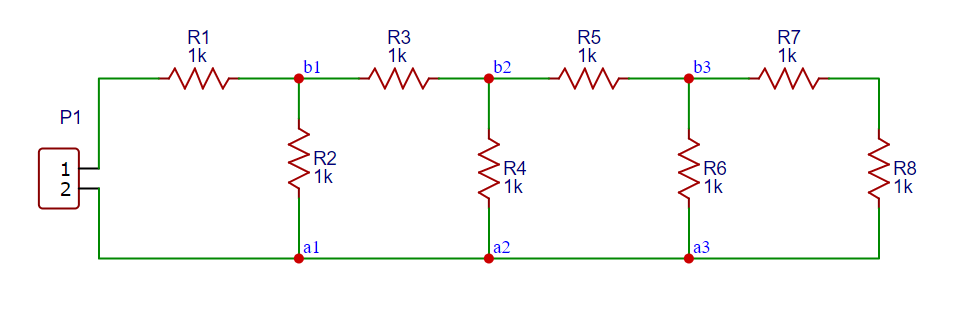
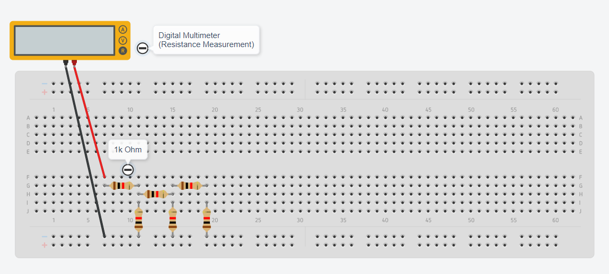
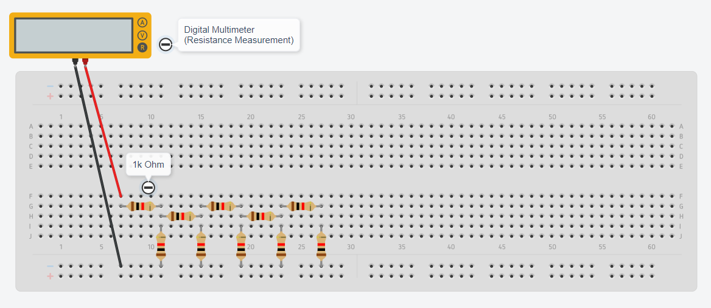
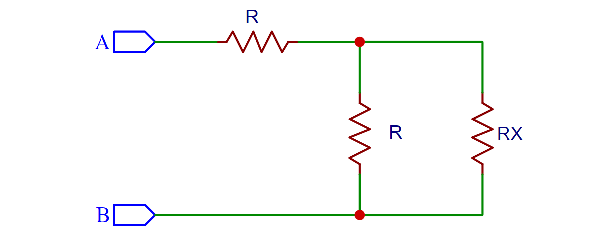
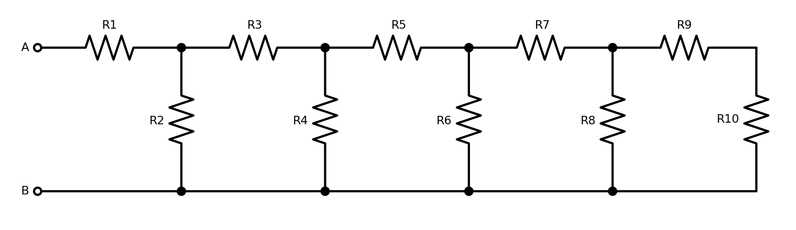

การฝึกต่อวงจรบนเบรดบอร์ดด้วยตัวต้านทานและวัดค่าความต้านทานรวม#
บทความนี้กล่าวถึง โจทย์สำหรับการฝึกต่อวงจรบนเบรดบอร์ดด้วยตัวต้านทานคงที่จำนวนหลายตัว (Resistor Network) และหาค่าความต้านทานรวมของวงจร โดยการวัดค่าด้วยมัลติมิเตอร์ และสามารถจำลองการทำงานเสมือนจริงได้โดยใช้ซอฟต์แวร์ AUTODESK Tinkercad Circuits
Keywords: Circuit Simulation, AUTODESK Tinkercad, Breadboard, Resistor Network, Golden Ratio
▷ โจทย์การทดลอง#
- ใช้ตัวต้านทานที่มีค่าคงที่เท่ากันทุกตัว เช่น R=1kΩ นำมาต่อกันบนเบรดบอร์ดตามผังวงจรตัวอย่าง
- นำตัวต้านทานครั้งละ 2 ตัวมาต่อกัน โดยเริ่มต้นด้วย R1 และ R2 ก่อน ทุกครั้งที่ได้นำตัวต้านทานมาต่อเพิ่มในวงจรครั้งละ 2 ตัว ให้วัดค่าความต้านทานรวมด้วยโอห์มมิเตอร์ (วัดที่จุดอ้างอิง 1 และ 2 ในผังวงจร) และจดบันทึกค่าที่วัดได้

รูป: ผังวงจรสำหรับการต่อตัวต้านทาน (เมื่อมีตัวต้านทาน 8 ตัว: R1 - R8)
คำถาม:
- แนวโน้มของค่าความต้านทานรวมมีการเปลี่ยนแปลงอย่างไร เมื่อนำตัวต้านทานมาต่อเพิ่มตามโจทย์?
- จงวิเคราะห์วงจรเพื่อหาค่าความต้านทานรวม
▷ การต่อวงจรและจำลองการทำงานเสมือนจริง#
หากต้องการทดลองต่อวงจรโดยยังไม่ใช้อุปกรณ์จริง ก็สามารถใช้ซอฟต์แวร์ AUTODESK Tinkercad Circuits ฝึกต่อวงจรและจำลองการทำงานได้ ดังนี้

รูป: ตัวอย่างการฝึกต่อวงจรด้วย AUTODESK Tinkercad (มีตัวต้านทาน 6 ตัว)

รูป: ตัวอย่างการฝึกต่อวงจรด้วย AUTODESK Tinkercad (มีตัวต้านทาน 10 ตัว)
ผลการทดลอง: ค่าที่วัดได้โดยการจำลองการทำงาน (ใช้ตัวต้านทานทั้งหมด 10 ตัว)
จำนวนตัวต้านทาน ค่าความต้านทานรวม
2 2.00k
4 1.67k
6 1.62k
8 1.62k
10 1.62k
จากผลการทดลองจะเห็นได้ว่า เมื่อเพิ่มจำนวนตัวต้านทานในวงจร ค่าความต้านทานรวมในวงจรจะเริ่มคงที่
▷ การวิเคราะห์วงจรเพื่อหาค่าความต้านทานรวม#
จากการจำลองการทำงาน ถ้ามีจำนวนตัวต้านทาน มากพอ จะทำให้ค่าความต้านทานรวมคงที่ ดังนั้นสมมุติว่า มีการต่อตัวต้านทานไว้จำนวนหนึ่งแล้ว และมีค่าความต้านทานรวมเท่ากับ และถ้าจะนำตัวต้านทานมาต่อเพิ่มอีก 2 ตัว ตามผังวงจรต่อไปนี้

รูป: การหาความต้านทานรวม
ค่าความต้านทานรวมที่ได้ในวงจรใหม่ ระหว่างจุด และ จะต้องได้ เช่นกัน
ดังนั้นถ้าให้ จะเขียนสมการใหม่ได้เป็น
และได้เป็นสมการกำลังสอง (Quadratic Equation) ที่มีตัวแปร (Unknown) เป็น และมี เป็นค่าคงที่ (เช่น )
คำตอบของสมการกำลังสองและได้ค่าที่เป็นบวกสำหรับ ก็คือ
ค่าคงที่ ก็คือ "สัดส่วนทองคำ" (Golden Ratio)
ถ้าให้ มีค่าเท่ากับ ก็จะได้ค่าความต้านทานรวมเท่ากับ
ตัวอย่างโค้ด Python สำหรับการคำนวณค่าความต้านทานรวม ตามระดับชั้นหรือจำนวนคู่ของตัวต้านทาน มีดังนี้
def total_resistance(n,R):
if n==1:
return 2*R
else:
return R + 1/( 1/R + 1/total_resistance(n-1,R) )
R = 1000 # Resistance in Ohm
level= 8 # Levels or number of resistor pairs
for i in range(1,level+1):
print( f"Level={i:d}) R_total={total_resistance(i, R):.1f}" )
print( f"R_total: ~{1.618*R:.1f} ")
ตัวอย่างข้อความเอาต์พุต สำหรับค่า R=1000 โอห์ม และจำนวนคู่ของตัวต้านทานเท่ากับ 8 ซึ่งจะเห็นได้ว่า ค่าความต้านทานรวมจะเริ่มคงที่เมื่อเพิ่มจำนวนคู่ของตัวต้านทานตั้งแต่ 6 เป็นต้นไป
Level=1) R_total=2000.0
Level=2) R_total=1666.7
Level=3) R_total=1625.0
Level=4) R_total=1619.0
Level=5) R_total=1618.2
Level=6) R_total=1618.1
Level=7) R_total=1618.0
Level=8) R_total=1618.0
R_total: ~1618.0
▷ การเขียนโค้ด Python เพื่อวาดรูปวงจรที่ประกอบด้วยตัวต้านทาน#
อีกหนึ่งตัวอย่างกิจกรรมซึ่งเกี่ยวข้องกับการเขียนโค้ด Python คือ การวาดผังวงจรโดยใช้
คำสั่งของไลบรารี่ที่มีชื่อว่า SchemDraw
ซึ่งได้มีการพัฒนามาตั้งแต่ปีค.ศ. 2014 โดย Collin Delker (Sandia National Laboratories)
และได้ทดลองใช้เวอร์ชัน v0.17, released on 2023-06-03
# Install the SchemDraw package.
# $ pip install schemdraw[matplotlib]
# $ pip install schemdraw[svgmath]
# see: https://schemdraw.readthedocs.io/en/latest/usage/start.html
import schemdraw
from schemdraw import elements as elm
def draw_resistor_network( d, levels ):
resistors = []
for i in range(levels):
r1 = elm.Resistor(label='R%d' % (2*i+1))
r2 = elm.Resistor(label='R%d' % (2*i+2))
resistors.append( r1 )
resistors.append( r2 )
if i==0:
d += r1.right().dot().idot(open=True).label('A', 'left')
d += r2.down().at(r1.end).dot()
d += elm.Line().left().dot(open=True).label('B', 'left')
elif i < (levels-1):
d += r1.right().at(resistors[2*i-1].start).dot()
d += r2.down().at(resistors[2*i].end).dot()
d += elm.Line().left()
else:
d += r1.right().at(resistors[2*i-1].start)
d += r2.down().at(resistors[2*i].end)
d += elm.Line().left()
with schemdraw.Drawing() as d:
d.config(fontsize=12)
levels = 5
draw_resistor_network ( d, levels )
# Save the schematic as an image file
d.save('resistor_network.png')
# Display the schematic
d.draw()

รูป: ตัวอย่างผังวงจรที่ได้จากการทำงานของโค้ด Python (กำหนดค่า levels ให้เท่ากับ 5)
▷ กล่าวสรุป#
บทความนี้นำเสนอตัวอย่างโจทย์ฝึกปฏิบัติโดยนำตัวต้านทานมาต่อวงจร โดยใช้ซอฟต์แวร์ เช่น AUTODESK Tinkercad Circuits หรือนำไปทดลองด้วยอุปกรณ์จริงก็ได้ รวมถึงการวิเคราะห์เพื่อหาค่าความต้านทานรวมของวงจร
This work is licensed under a Creative Commons Attribution-ShareAlike 4.0 International License.
Created: 2022-12-20 | Last Updated: 2023-12-01